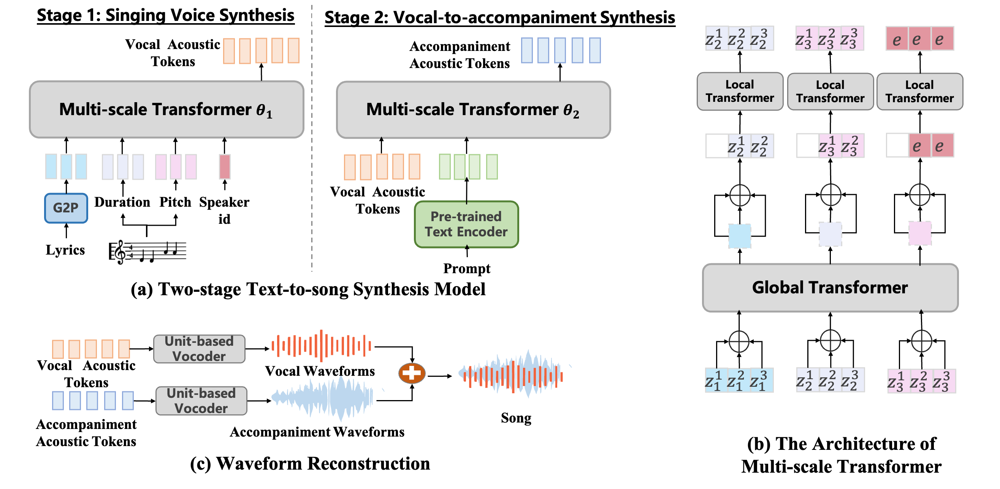
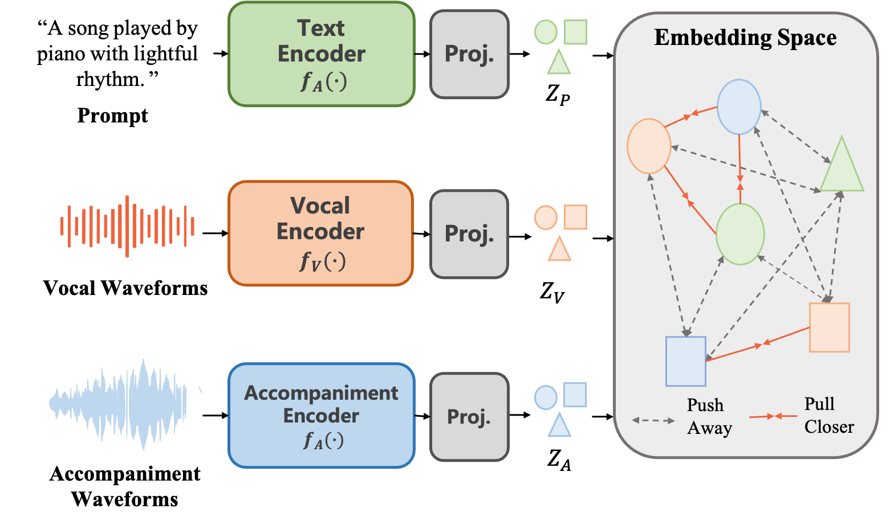

Abstract. A song is a combination of singing voice and accompaniment. However, existing works focus on singing voice synthesis and music generation independently. Little attention was paid to explore song synthesis. In this work, we propose a novel task called text-to-song synthesis which incorporating both vocals and accompaniments generation. We develop Melodist, a two-stage text-to-song method that consists of singing voice synthesis (SVS) and vocal-to-accompaniment (V2A) synthesis. Melodist leverages tri-tower contrastive pretraining to learn more effective text representation for controllable V2A synthesis. A Chinese song dataset mined from a music website is built up to alleviate data scarcity for our research. The evaluation results on our dataset demonstrate that Melodist can synthesize songs with comparable quality and style consistency. Audio samples can be found in https://text2songMelodist.github.io/Sample/.

In this work, we propose Melodist, the first controllable text-to-song model. It is organized in two stages: 1) In the first stage we follow the common SVS process that generates a singing voice conditioned on the music score; 2) In the second stage we generate musical accompaniments from singing given natural language prompt. Instead of directly modeling distributions over vocal and accompaniment waveforms, we adopt acoustic tokens as the prediction targets. Finally, we reconstruct waveforms from predicted vocal acoustic tokens and accompaniment acoustic tokens and then mix them as the output.
In the SVS stage, the model synthesizes acoustic tokens conditioned on lyric phonemes, phoneme durations, and phonemes pitch; In the vocal-to-accompaniment synthesis stage, the model synthesizes acoustic tokens of accompaniment conditioned on vocal acoustic tokens and natural language prompts. We leverage a pre-trained text encoder providing text representation with consistent global characteristics with the vocal and accompaniment, which we will illustrate as follows.

We introduce a tri-tower pre-training scheme with contrastive loss that jointly embeds text, vocals, and accompaniments into a feature-aligned space. We leverage this pre-trained text encoder providing text representation with consistent global characteristics with the vocal and accompaniment. It can be incorporated with our backbone model to enhance attribute controllability.
In this section, we provide a small subset of our dataset crawled from the web. Specifically, we present the following contents:
| ID | Lyrics | Tag | Song | Vocal | Accompaniment |
|---|---|---|---|---|---|
| 0 | 努力为你改变，却变不了预留的伏线 | soft, mellow, piano, soft, mellow, poignant, emotional, sentimental, romantic, nostalgic. | |||
| 1 | 我发誓不再说谎了 | passionate, vocal, shimmering, mellow, piano. | |||
| 2 | 凭什么要失望 | pop, passionate, shimmering, mellow, piano, soft. | |||
| 3 | 可惜没如果，噢 | pop, passionate, vocal, mellow, piano, emotional, passionate, emotional, ambient. | |||
| 4 | 丢掉火柴让我温暖你 | guitar, bass, guitar, electronic, beat, urban, dance, club. | |||
| 5 | 走开，或者别的什么 | vocal, shimmering. |
In this section, we present samples of synthesized singing voice. Note that the following samples do not contain accompaniment.
| ID | Lyrics | GT | Generated |
|---|---|---|---|
| 0 | 在风暖月光的地点 | ||
| 1 | 我看见你酷酷的笑容 | ||
| 2 | 如果你也听说 | ||
| 3 | 骄纵的心性已烟消云散 | ||
| 4 | 我在废墟之中守着你走来，喔，我的泪光 | ||
| 5 | 青春有你出席不是为了让你缺席，好想沿着回忆狂奔向你昨日的青空 | ||
| 6 | 努力为你改变，却变不了预留的伏线 | ||
| 7 | 怎么你却不敢了呢 | ||
| 8 | 对着那空气说话 | ||
| 9 | 我发誓不再说谎了 |
In this section, we present samples of synthesized singing voice. We first provide some samples, where the model incorporating speech data demonstrates superior control capabilities, while the model using solely singing data fails to control attributes or the characteristics are not significant.
| ID | Lyrics | Prompt | Reference Vocal | Synthesized Accompaniment | Synthesized Song |
|---|---|---|---|---|---|
| 0 | Camerarolling，镜头不会晃的抓住你的双手 | This is a hip-hop music piece. There is a male vocal rapping in the lead. The melody is being played by the synth pad while a strong bass sound can be heard in the background. The rhythm is provided by an electronic drum beat. The atmosphere is danceable and energetic. This piece could be played at nightclubs or dance clubs. | |||
| 1 | 太挤了我的show太燥，你太矫情我不欢迎快点滚 | The low quality recording features a hip hop song that consists of a flat male vocal rapping over punchy kick and snare hits, shimmering hi hats, reversed crash cymbals and groovy piano melody. There are some crowd cheering noises in the background. It sounds groovy and addictive. | |||
| 2 | 它在天空看过多少次遗忘 | A male singer sings this soft melody with backup singers in vocal harmony. The song is medium tempo with a keyboard accompaniment, groovy bass line, steady drumming rhythm and tambourine beats. | |||
| 3 | 眼泪再苦再咸有你安慰又是晴天 | This is a pop music piece. There is a male vocalist singing melodically in the lead. The melody is being played by the acoustic guitar and the electric guitar while the bass guitar is playing in the background. The rhythm is provided by a slow tempo acoustic drum beat. The atmosphere is easygoing. This piece could be used in the soundtrack of a teenage drama TV series. | |||
| 4 | 该怎么重新安装我的设定 | modern folk rock or indie with fingerstyle acoustic guitar and smooth male vocals. The vocal production is loud. Drums are present with the ride cymbal playing a steady pattern and the snare being played with brushes. The mood is mellow. | |||
| 5 | 岁月教会我懂分寸 | This slow pop song features a male voice singing the main melody. This is accompanied by a piano playing chords. The bass plays the root notes of the chords. A piano plays a chord in the background. There is no percussion in this song. The mood of this song is romantic. This song can be played in a romantic movie. | |||
| 6 | 如果有些人让你心伤 | he low quality recording features a commercial song that consists of a soft female vocal singing over mellow piano melody, shimmering bells, punchy kick and echoing synth lead melody. It sounds mellow, sad, emotional and passionate. | |||
| 7 | 地球来回旋转，我会耐心地等 | The low quality recording features a pop song that consists of a passionate female vocal singing over shimmering cymbals, mellow piano melody, punchy kick, groovy bass and strings melody. It sounds emotional, passionate and happy. |